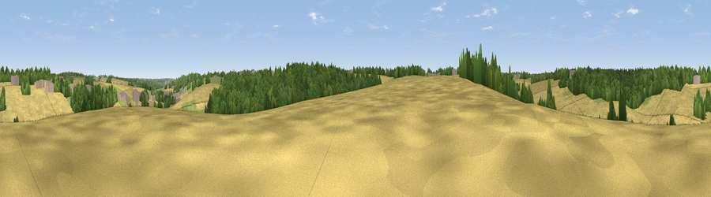

Viewpoint near Whelpley Hill
#44957 in England · top 86% of its area beats it · near Whelpley HillWhere it is
The exact computed spot (SP 99975 05725). Click the marker for map links.
The view, rendered

A 360° render of this exact spot computed from the terrain model, tree cover and land cover — summer colours, afternoon light, calibrated against photographs of famous viewpoints. Real trees, hedges and buildings will differ in detail.
The panorama
Grey silhouette: terrain skyline in each direction (720 bearings, Earth curvature and refraction included). Dashed green: skyline with trees (+15 m) and buildings (+8 m) as obstacles. Blue strip: how far the ground is visible on each bearing.
Where the view opens
Wedge length = distance to the farthest visible ground on that bearing (vegetation-aware). Rings at 10, 25 and 50 km.
What fills the view
55% cropland · 29% woodland · 13% grassland · 3% built-up
Angular shares of the visible panorama (visual magnitude), not map area. Landscape diversity 0.46 (0–1 Shannon).
Key numbers
More beautiful places nearby
The staircase of upgrades: each row has a higher view potential than everything closer. Driving times are estimates from straight-line distance, calibrated against real road routing — check an actual route before setting out.
| Place | Direction | Drive | Score |
|---|---|---|---|
| Viewpoint near Bourne End | NE · 1 km | ~3 min | 20.1 |
| Viewpoint near Potten End | NNE · 5 km | ~11 min | 22.4 |
| Viewpoint near Corner Hall | E · 6 km | ~14 min | 24.0 |
| Viewpoint near Tring Station | NNW · 9 km | ~17 min | 46.9 |
| Viewpoint near Tring | WNW · 9 km | ~18 min | 49.1 |
| Viewpoint near Tring | WNW · 9 km | ~18 min | 55.1 |
| Viewpoint near Tring Station | NNW · 10 km | ~19 min | 68.5 |
| Beacon Hill | NNW · 12 km | ~22 min | 74.1 |
51.74132, -0.55345 · source: screening · position refined by local search. Computed location — check access rights before visiting.